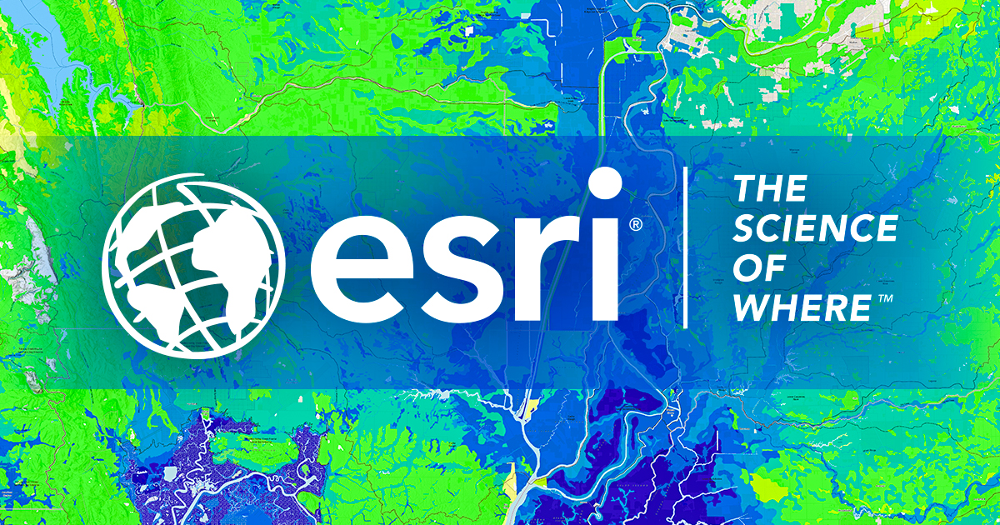

Infraestructura nacional
Geodata ICDE
Acceso a recursos de la Infraestructura Colombiana de Datos Espaciales, catálogos geográficos, servicios interoperables y fuentes oficiales.
Selecciona la fuente geográfica que deseas consultar. Cada acceso reúne información, servicios cartográficos y datos territoriales disponibles para Colombia.
Acceso a recursos de la Infraestructura Colombiana de Datos Espaciales, catálogos geográficos, servicios interoperables y fuentes oficiales.
Consulta información cartográfica, geodésica, catastral y territorial producida por el Instituto Geográfico Agustín Codazzi.

03Acceso a mapas, capas, servicios ArcGIS y recursos geográficos publicados mediante plataformas y herramientas de Esri.